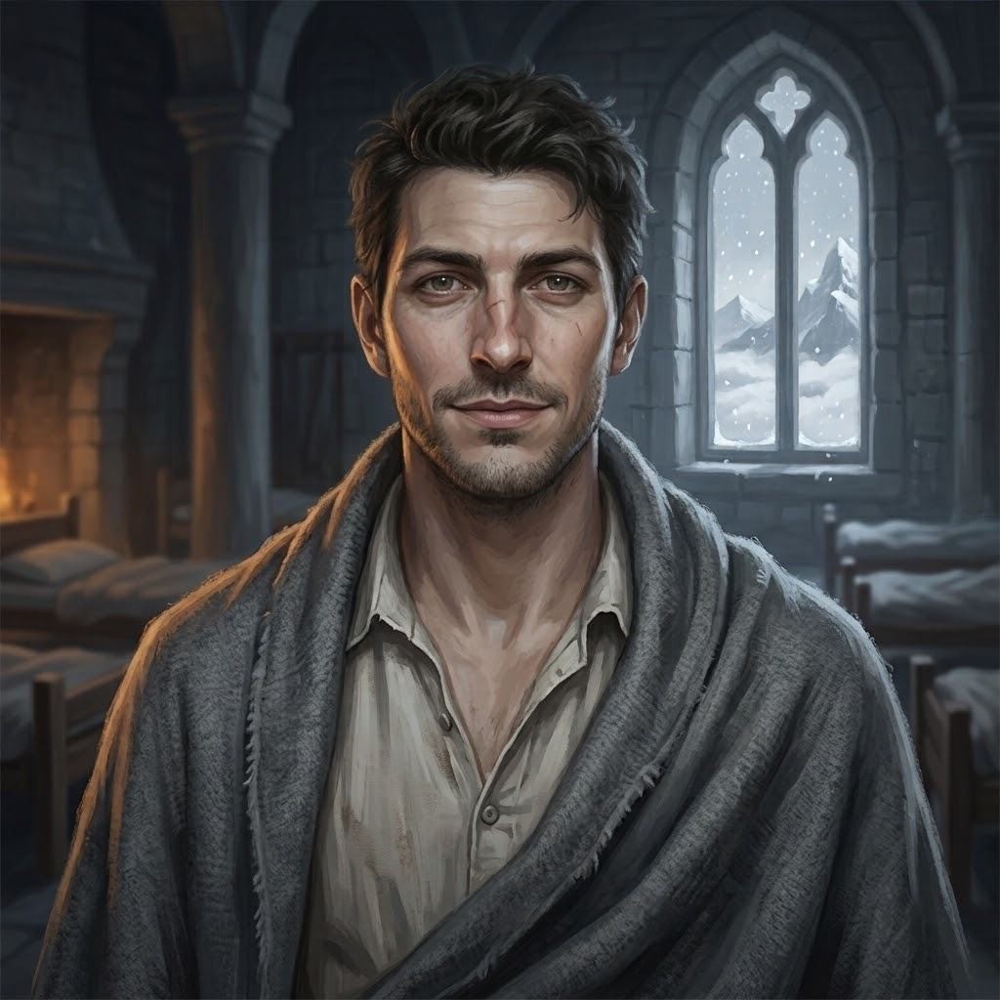

The cast
Characters
Everyone the page has shown or named. Nothing here runs ahead of the story.
FactionStatus
Roster
9
Ser Darrow of EdgemoorCaptain of the Ninth Lance
aliveThe Ninth Lance
Last seen: Chapter 1 · Scene 2 — Two FiresMaelis VorneMender of Saint Ysolde's
aliveThe House of Menders
Last seen: Chapter 1 · Scene 2 — Two FiresSer Aldric VaneOf the Second Lance
aliveThe Second Lance
Last seen: Prologue · I — Harrow FordSer Hollis GarrowOf the Sixth Lance
aliveThe Sixth Lance
Last seen: Chapter 1 · Interlude — The WaxWren AshdownLedger-keeper of Saint Ysolde's
aliveThe House of Menders
Last seen: Chapter 1 · Scene 1 — The Reading of the KnotsMother IoneOf Saint Ysolde's; told of the riders
aliveThe House of Menders
Named in: Chapter 1 · Scene 1 — The Reading of the KnotsSer Benedek OrrinOf Hollis's Sixth; the next cot
aliveThe Sixth Lance
Last seen: Chapter 1 · Interlude — The WaxSister PellA Sister of Saint Ysolde's; her glass is in the bell tower
unknownThe House of Menders
Named in: Chapter 1 · Scene 1 — The Reading of the KnotsThe red-handed womanThe woman at the front of the clan line at Harrow Ford
unknownThe clans of the Thornwild
Last seen: Prologue · I — Harrow Ford